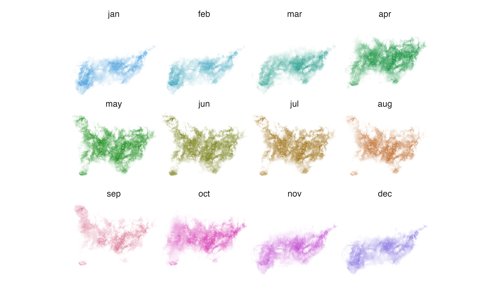
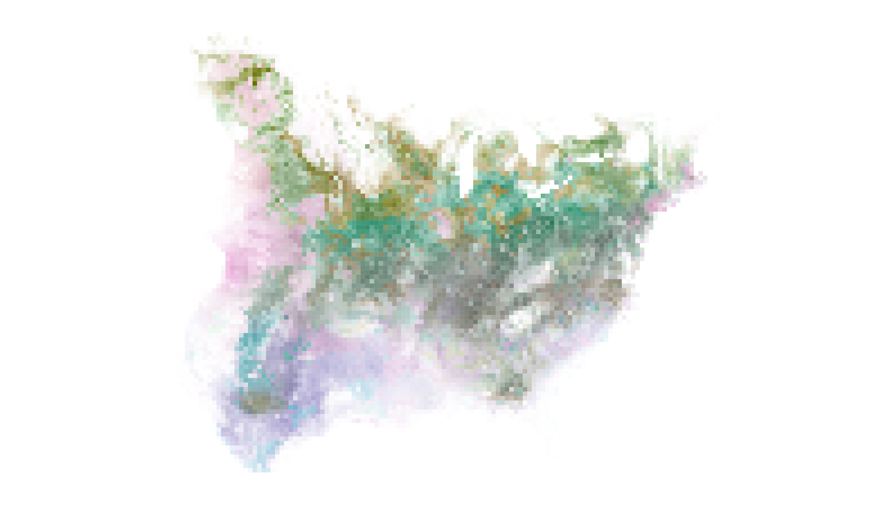
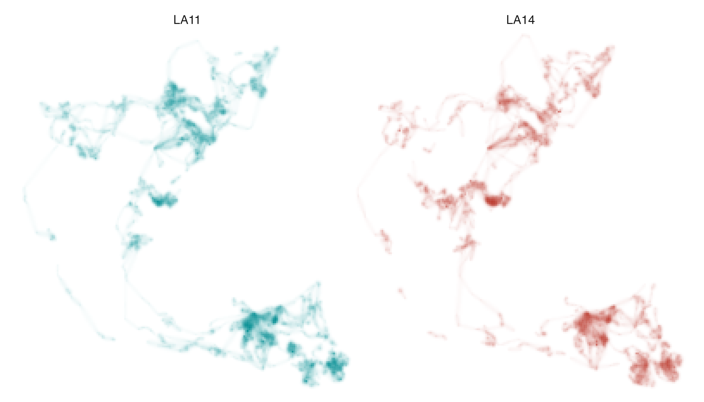
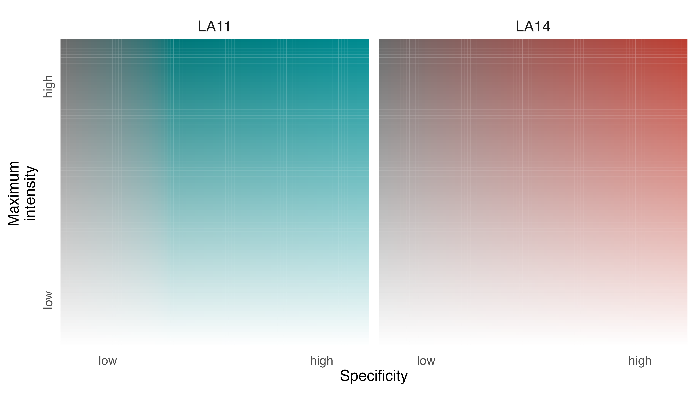

Maps play a central role in research aimed at understanding how and why wildlife distributions shift through space and time. They give form to complex sets of assumptions, hypotheses, and predictions and, in doing so, offer the promise of embodying detailed knowledge about species and individuals. Traditionally, biologists have used range maps, and home range maps, to describe animal distributions in space and time. Despite their historical success as representational forms, they are increasingly incapable of communicating our knowledge of wildlife distributions.
Technologies for acquiring and modeling wildlife distribution data have improved dramatically in recent years. As a result, we possess ever more detailed descriptions of animal occurrence, abundance, and density in space and time. This glut of high-resolution spatial-temporal information comes with its own set of visualization challenges, however. Intuitively, we might try to reveal patterns of spatial-temporal stasis and change by stacking distributions on top of each other, but this strategy often results in underlying data being occluded or muddied, depending on whether and how layers are combined.
We developed the colorist package to provide researchers with a variety of options for exploring and communicating information about wildlife distributions in space and time. colorist emphasizes the use of color to indicate where, when, and how consistently species, individuals, or groups of animals can be found. In order to do this effectively, colorist takes information from a stack of rasters, processes it, and links it to HCL (hue-chroma-luminance) color palettes in specific ways so that occurrence, abundance, or density values have nearly equal perceptual weights in resulting maps.
Like other visualization tools, we suggest that the colorist package may be useful to researchers in different ways throughout the process of building knowledge. Researchers may want to use colorist to explore preliminary data through visualizations, with the goal of developing or refining research questions. Alternatively, researchers may come to colorist having already discovered something interesting about wildlife distributions that they would like to communicate in visualizations. Regardless of where researchers are in the process of discovery, it is important to remember that colorist functions were built to handle and display data. People are still in charge of their interpretation (at least for now).
The colorist package works on raster data stored as RasterStack objects. Individual raster layers might represent an ordered temporal sequence of species distributions or utilization distributions. Alternatively, raster layers might represent an unordered set of distributions for multiple species, or individuals, within a single time period. Whatever temporal or identity relationships exist within the stack, all raster layers should contain values in the same units (e.g., abundance, occurrence, or probability density) to ensure that they can be meaningfully compared.
When preparing raster layers, users should be sure to distinguish raster cells with 0 values (e.g., cells in which a species is predicted to occur with probability 0) from cells with NA values (e.g., cells for which occurrence predictions could not be made). This distinction is important for identifying areas where knowledge of distributions is incomplete. In addition, because colorist functions can take time to process large RasterStack objects, researchers may want to aggregate their raster data spatially and/or temporally while exploring alternative visualization strategies.
The basic workflow for colorist is as follows:
Here, we describe three use cases to illustrate colorist functions and how they can be combined to map distributions.
There is growing interest in characterizing wildlife distributions across the full-annual cycle, as opposed to one or two seasons, so that we can better understand the places and times at which populations are vulnerable. Maps play an important role in that process. In the past, range maps for resident species typically contained a single block of color along with political boundaries that indicated where a species can be found throughout the year. In contrast, range maps for migratory species typically contained several blocks of color indicating where a species might be found during a particular season, or throughout the entire year.
Here, we use aggregated eBird Status and Trends data for Field Sparrow (Spizella pusilla) to illustrate a different strategy for creating annual cycle maps, one that leverages continuous occurrence data (rather than categorical presence-absence data) to describe where and when viewers might be able to find a species. Field Sparrow is a relatively small bird that is commonly found in open habitats throughout eastern North America. It is often considered a partial migrant in that some populations move throughout the year, while others are stationary. This results in heterogeneity in when, where, and how consistently birds can be found in space-time.
We start by loading the fiespa_occ data set. It contains twelve raster layers, one for each month of the year. Cell values in each layer indicate the modeled probability of Field Sparrow occurrence. Additional Status and Trends data can be accessed using the ebirdst R package.
# install packages
library(sf)
library(ggplot2)
library(colorist)
# load data
data("fiespa_occ")
fiespa_occ
#> class : RasterStack
#> dimensions : 193, 225, 43425, 12 (nrow, ncol, ncell, nlayers)
#> resolution : 14814.03, 14814.04 (x, y)
#> extent : -1482551, 1850606, -1453281, 1405830 (xmin, xmax, ymin, ymax)
#> crs : +proj=laea +lat_0=38.7476367322638 +lon_0=-90.2379515912106 +x_0=0 +y_0=0 +datum=WGS84 +units=m +no_defs +ellps=WGS84 +towgs84=0,0,0
#> names : jan, feb, mar, apr, may, jun, jul, aug, sep, oct, nov, dec
#> min values : 0, 0, 0, 0, 0, 0, 0, 0, 0, 0, 0, 0
#> max values : 0.8538026, 0.8272926, 0.7993844, 0.7805922, 0.7799550, 0.7745436, 0.7626938, 0.7867995, 0.7790458, 0.7896419, 0.8158410, 0.8681034After confirming the data have been loaded correctly, we use metrics_pull() to transform occurrence values from the stack into intensity values that range from 0 (i.e., cells without Field Sparrows) to 1 (i.e., the cell[s] with the highest occurrence value anywhere in the stack). This process of “pulling” metrics from the RasterStack preserves all of the information in the original stack while preparing layers for subsequent visualization.
# pull information from the stack
m1 <- metrics_pull(fiespa_occ)
m1
#> class : RasterBrick
#> dimensions : 193, 225, 43425, 12 (nrow, ncol, ncell, nlayers)
#> resolution : 14814.03, 14814.04 (x, y)
#> extent : -1482551, 1850606, -1453281, 1405830 (xmin, xmax, ymin, ymax)
#> crs : +proj=laea +lat_0=38.7476367322638 +lon_0=-90.2379515912106 +x_0=0 +y_0=0 +datum=WGS84 +units=m +no_defs +ellps=WGS84 +towgs84=0,0,0
#> source : memory
#> names : jan, feb, mar, apr, may, jun, jul, aug, sep, oct, nov, dec
#> min values : 0, 0, 0, 0, 0, 0, 0, 0, 0, 0, 0, 0
#> max values : 0.9835264, 0.9529886, 0.9208400, 0.8991927, 0.8984586, 0.8922251, 0.8785749, 0.9063431, 0.8974113, 0.9096173, 0.9397971, 1.0000000Next, we want to choose a color palette that helps communicate temporal information about Field Sparrow occurrence. Among the three palette functions currently included in colorist, we want to use palette_timecycle() because our data layers represent an ordered sequence of distributions that circles back on itself (i.e., the distribution of Field Sparrows in December is temporally adjacent to both November and January distributions).
# generate a color palette
p1 <- palette_timecycle(fiespa_occ)
head(p1)
#> specificity layer_id color
#> 1 0 1 #6A6A6A
#> 2 0 2 #6A6A6A
#> 3 0 3 #6A6A6A
#> 4 0 4 #6A6A6A
#> 5 0 5 #6A6A6A
#> 6 0 6 #6A6A6AThe palette_timecycle() function returns a data frame with three fields: specificity, layer_id, and color. The specificity and layer_id fields will be used to assign colors to specific raster cells.
To visualize our distributions in individual facets, we provide the map_multiples() function with distribution metrics and palette information. The structure of the plot and labels for each distribution within the plot can be specified using the ncol and labels arguments, respectively.
# map each of the layers
map_multiples(m1, p1, ncol = 4, labels = names(fiespa_occ))
If we want to extract one month of data for closer inspection, we can use map_single() and specify which month of data we would like to see using the layer argument.
# map one layer
map_single(m1, p1, layer = 6)To generate a single annual cycle map that synthesizes spatial-temporal information about Field Sparrow occurrence, we need to “distill” the distributional information in our RasterStack using metrics_distill().
The metrics_distill() function calculates distribution metrics across all layers in every raster cell and returns three metrics for subsequent visualization:
While the maximum intensity and layer of maximum intensity metrics are relatively easy to grasp, the calculation and meaning of “specificity” warrants further explanation. We define specificity according to the following equation:
\[
specificity=50\times \frac{\sum_{l=1}^{n}|y_l-\bar{y}|}{(n-1)\cdot \bar{y}}
\] where \(n\) indicates the number of layers in the RasterStack, \(y_l\) is the intensity value in layer \(l\), and \(\bar{y}\) is the mean intensity value across layers. Specificity values can range from 0 to 100. Values of 0 indicate intensity values are identical in all layers, while values of 100 indicate intensity values are restricted to a single layer.
The interpretation of specificity values depends on the nature of the data layers being explored. In the case of Field Sparrow, where raster layers describe the distribution of a species at different times of the year, specificity can be interpreted as a measure of seasonality (i.e., 0 = stable year-round occurrence in a cell, 100 = highly seasonal occurrence).
After providing metrics_distill() with the fiespa_occ data, the map_single() function combines the resulting distribution metrics and palette information to generate a map.
# distill distribution information across layers
m1_distill <- metrics_distill(fiespa_occ)
# visualize distilled information on a single map
map_single(m1_distill, p1)
Interpreting annual cycle maps becomes straightforward with a little experience, but a legend is typically required to orient viewers. We can generate a legend for the Field Sparrow annual cycle map using legend_timecycle(), a function that requires a data frame generated by palette_timecycle(). Information about when the time cycle begins (and ends) can also be provided in the origin_label argument. When interpreting the legend and map, remember that specificity indicates degree of seasonality in Field Sparrow occurrence.
# generate a legend
legend_timecycle(p1, origin_label = "Jan 1")With an annual cycle map and legend in hand, we can now figure out where to find Field Sparrows in space and time. Very colorful cells indicate areas with high occurrence probabilities, but only during specific times of year. For example, rich blue colors towards the bottom of the map indicate that birds occur in those cells with high probability, but almost exclusively in the winter months. In contrast, dark gray areas indicate consistently high occurrence probabilities in cells throughout the year.
Researchers have been placing devices on animals for more than a half century to record individual movements through space and time. In recent years, tracking devices have become smaller, lighter, and increasingly capable of recording data with high spatial-temporal resolution. As a result, it is now possible to understand and communicate how individual animals use their environments in much more detail than was feasible with coarse tracking data and traditional home range maps.
Here, we use colorist to explore how an individual Fisher (Pekania pennanti) living in upstate New York moved through its local environment over a period of nine sequential nights in 2011. Fisher are omnivorous mammals in the weasel family that occur in boreal forests throughout Canada and the United States. They tend to be solitary throughout most of the year but males and females will sometimes inhabit overlapping territories.
We start by loading the fisher_ud data set, which contains utilization distributions calculated for an individual animal (MP5) on each of nine sequential nights in April 2011. Cell values in each raster layer indicate the probability density of cell use between sunset and sunrise.
# loda data
data("fisher_ud")
fisher_ud
#> class : RasterStack
#> dimensions : 176, 177, 31152, 9 (nrow, ncol, ncell, nlayers)
#> resolution : 25, 25 (x, y)
#> extent : -2282.343, 2142.657, 5100266, 5104666 (xmin, xmax, ymin, ymax)
#> crs : +proj=moll +lon_0=-73.4137066015374 +x_0=0 +y_0=0 +ellps=WGS84 +units=m +no_defs
#> names : night1, night2, night3, night4, night5, night6, night7, night8, night9
#> min values : 0, 0, 0, 0, 0, 0, 0, 0, 0
#> max values : 0.004695207, 0.007591029, 0.006749434, 0.002891691, 0.002833876, 0.004711692, 0.002017082, 0.002700729, 0.005282948After loading the data, let’s begin by visualizing information in each of the layers. We do this by “pulling” information from the RasterStack and combining it with a color palette in map_multiples(). The Fisher data differ from the Field Sparrow data in the previous example in that they describe a linear sequence of distributions, not a cyclical sequence. So, we need to use palette_timeline() rather than palette_timecycle() to generate our color palette.
# pull information from the stack
m2 <- metrics_pull(fisher_ud)
# generate a color palette
p2 <- palette_timeline(fisher_ud)
# map each of the layers
map_multiples(m2, p2)Many of the maps appear relatively washed out because intensity values in every cell have been scaled relative to the highest intensity value in the entire RasterStack. It is not uncommon for distributions to contain highly skewed intensity values because individual animals spend a vast majority of their time within a relatively small area or, in the case of species distributions, because populations are relatively dense during some seasons and relatively dispersed during others. This can make visualizing distributions a challenge.
The lambda parameter in map_multiples() and map_single() allows users to visually tune the relative weights of high and low intensity values using a modulus transformation (see [scales::modulus_trans()]). In this case, we want to reduce the disparity between the visual weights of high and low intensity values, so we set lambda = -5.
# map each of the layers and adjust visual weights
map_multiples(m2, p2, lambda = -5)This enables us to better see the places where our focal animal spent at least some time as it moved across the landscape. To further explore how MP5 moved throughout its territory over the course of nine nights, we can “distill” distributional information from across all nine layers and use the resulting metrics to visualize patterns of space use with map_single().
It is important to remember that specificity values (and resulting visualization of specificity values) for Fisher should be interpreted differently than for Field Sparrow. Here, specificity values indicate the degree to which MP5 used the same locations within the landscape across nine nights. Low specificity suggests consistent use through time. High specificity suggests very inconsistent or ephemeral use.
# distill distribution information across layers
m2_distill <- metrics_distill(fisher_ud)
# visualize distilled information on a single map
map_single(m2_distill, p2, lambda = -5)Output from legend_timeline() will help to orient viewers and we can use the time_labels argument to indicate the ends of the timeline. Looking across the nine nights, MP5 spent relatively little of its time anchored in one area. The bright colors seen throughout the map are the result of high specificity values, which indicate that MP5 explored different parts of its territory almost every night.
# generate a legend
legend_timeline(p2, time_labels = c("April 7", "April 15"))In the previous examples, we used colorist to explore the distributions of a single species and a single individual across multiple time periods. Other conceptualizations and uses of colorist functions are possible, however. For example, colorist can also be used to explore the distribution of multiple species or individuals within a single time period.
Here, we use GPS tracking data collected from African Elephants (Loxodonta africana) in Etosha National Park, Namibia during 2011 to explore how two individuals used the landscape over the course of a year. The African Elephant is an iconic species with a complex social system that remains a target of poachers throughout much of Africa. Many populations of African Elephants move seasonally along specific migratory routes, tracking availability of seasonally abundant resources.
To begin, we load the elephant_ud data set which contains utilization distributions for two individual elephants (LA11 and LA14) during 2011. Because the utilization distributions form an unordered set (i.e., they need not be presented in any specific cyclical or linear sequence), we use the palette_set() function to assign them colors. Then, we map the two distributions using map_multiples() while adding visual emphasis to rarely used areas with the lambda argument and adding identifiers to each map with the labels argument.
# load data
data("elephant_ud")
# pull information from the stack
m3 <- metrics_pull(elephant_ud)
# assign a color palette
p3 <- palette_set(elephant_ud)
# generate maps for each individual
map_multiples(m3, p3, ncol = 2, lambda = -5, labels = names(elephant_ud))
The utilization distributions for LA11 and LA14 look remarkably similar at first glance, which is not surprising given the two elephants belong to the same herd. However, we can more clearly understand the similarities and differences in how they used space in 2011 by “distilling” distributional information from across the two raster layers with metrics_distill() and visualizing the resulting metrics with map_single().
Before generating the map, however, we should recalibrate our understanding of what specificity values mean based on the nature of the data we are exploring. In contrast to the Field Sparrow and Fisher examples, where specificity indicated the degree to which intensity values were inconsistent (or consistent) through time, here specificity values can be interpreted as a measure of differential use of the landscape. Very low specificity values indicate equal use of a cell by both individuals; very high specificity values indicate exclusive use by one individual.
Accordingly, if the two utilization distributions were identical, we would expect map_single() to produce a range of gray values indicating where the pair spent relatively more or less time. There would not be any blue or red cells indicating areas were being used differentially. In contrast, if the two distributions were only superficially similar then we would expect map_single() to produce blue and red cells indicating exclusive use of areas by each individual, and very few gray cells indicating equal use.
# distill distribution information across individuals
m3_distill <- metrics_distill(elephant_ud)
# visualize distilled information on a single map
map_single(m3_distill, p3, lambda = -5)
# generate a legend
legend_set(p3, group_labels = names(elephant_ud))
Despite the general similarity of the two utilization distributions, some places were used almost exclusively by LA11 (i.e., blue cells) and others were used almost exclusively by LA14 (i.e., red cells). We can contextualize these patterns by adding information about the locations of pans, waterholes, roads, and boundaries to the map. These environmental data layers can be downloaded as a GeoPackage from the package GitHub repository, which we do below.
# download data to a temp directory
url <- "https://github.com/mstrimas/colorist/raw/master/data-raw/"
f <- file.path(tempdir(), "etosha-features.gpkg")
download.file(paste0(url, basename(f)), f)We can then read the spatial data from the GeoPackage into R and ensure that the data are described by the same coordinate reference system as the elephant data.
pans <- read_sf(f, layer = "pans") %>%
st_transform(crs = st_crs(elephant_ud))
waterholes <- read_sf(f, layer = "waterholes") %>%
st_transform(crs = st_crs(elephant_ud))
park <- read_sf(f, layer = "etosha") %>%
st_transform(crs = st_crs(elephant_ud))
roads <- read_sf(f, layer = "roads") %>%
st_transform(crs = st_crs(elephant_ud))Then we use map_single() to reproduce our map of LA11 and LA14 distributions, but we append geom_sf() line objects to our map_single() function. These additional lines of code allow us to add environmental context to our underlying elephant map (which is a ggplot object) and communicate additional information about how elephants LA11 and LA14 navigate Etosha National Park. We can also add a title to our map and remove the black border around the panel.
# visualize both distributions on a single map and add environmental data
elephant_map <- map_single(m3_distill, p3, lambda = -5) +
geom_sf(data = pans, alpha = 0.2, size = 0.15, color = "gray40") +
geom_sf(data = roads, size = 0.1, color = "gray60") +
geom_sf(data = waterholes, size = 0.25) +
geom_sf(data = park, size = 3, fill = NA, color = alpha("gray60", 0.2)) +
geom_sf(data = park, size = 0.2, fill = NA, color = "gray20", linetype = 6) +
ggtitle("Two Elephants in Etosha National Park") +
theme(panel.border = element_blank())
# show the map
elephant_mapThe resulting map object (elephant_map) could be saved using the ggsave() function.
# save the map
ggsave(plot = elephant_map,
filename = "afrele_map_singles.png",
width = 6,
height = 3.5,
dpi = 600)